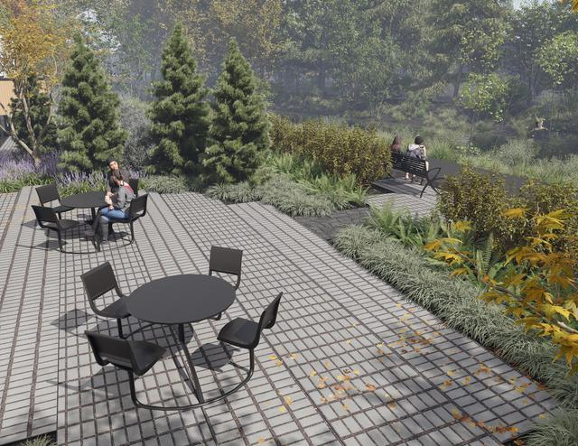
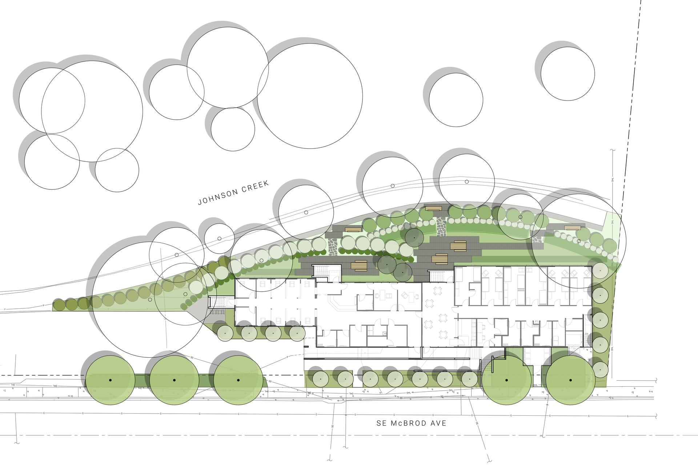
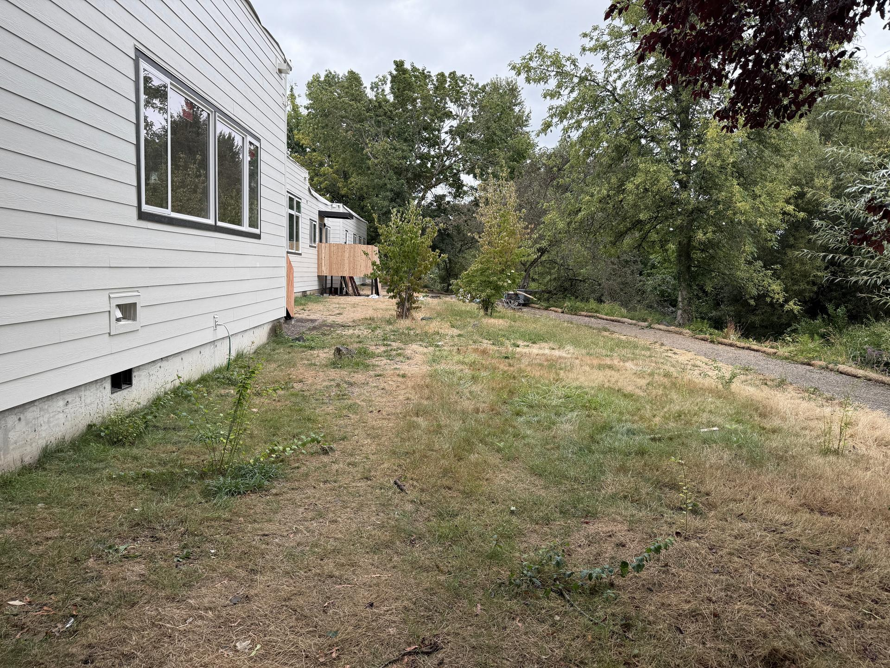

Clackamas County Stabilization Center
Located along Johnson Creek, the Clackamas County Stabilization Center
provides short-term care and transitional housing for adults
experiencing mental health crises and other signifi cant life
challenges. The landscape design extends the facility’s supportive
environment outdoors, creating a safe, welcoming space for rest, refl
ection, and quiet social interaction within a lush, restorative
setting.
Two garden patios feature permeable paving and offer fl exible spaces
for conversation, card games, or simply spending time outside.
Sweeping bands of riparian-inspired planting soften the paved areas,
drawing on the meandering character of Johnson Creek and creating a
sense of shelter beneath the site’s mature trees. Along an existing
creekside path, benches are positioned to overlook the water, offering
moments of solitude and opportunities to observe the birds and other
wildlife that inhabit this dynamic urban waterway.
Native and regionally adapted plantings bring seasonal variation,
texture, and habitat value to the landscape. Together, the gardens and
creekside spaces provide opportunities to connect with nature, fi nd
moments of calm, and experience the restorative qualities of the
outdoors as part of a broader environment of care, dignity, and
recovery.
Location: Portland, OR
Collaborators: EM Architecture
Status: Under Construction
Collaborators: EM Architecture
Status: Under Construction

